The structure of domestic firm production networks
A-Club DoM LSE
October 4, 2023
Motivation
Increasing availability of firm production networks data!
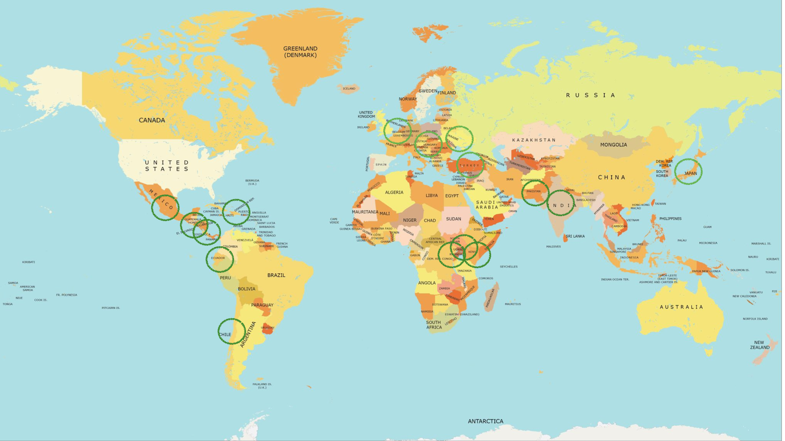Figure 1: Countries with firm production networks data
Motivation
Exciting research agendas
- Tax compliance: Almunia et al. (forthcoming) and Carrillo et al. (2022).
- Transmission of micro and macroeconomic shocks through production networks: Acemoglu et al. (2012), Huneeus (2020), Dhyne et al. (2022), Cevallos Fujiy et al. (2022), Dhyne et al. (2021), and Demir et al. (2022).
- Earnings inequality: Adão et al. (2022) and@Huneeus2022EarningsNetworks.
- Endogenous network formation: Panigrahi (2022), Arkolakis et al. (2021), Bernard et al. (2022), Bernard et al. (2019)
- Supply chain disruptions: Carvalho et al. (2021) and Cevallos Fujiy et al. (2022).
Motivation
Are the results obtained in one country applicable to all of them?
Threats to our study.
- Data collection.
- Informality.
- Auditing: Almunia et al. (forthcoming) and Pomeranz (2015).
- Institutions.
Motivation
Are the results obtained in one country applicable to all of them?
Different topographies and geographies
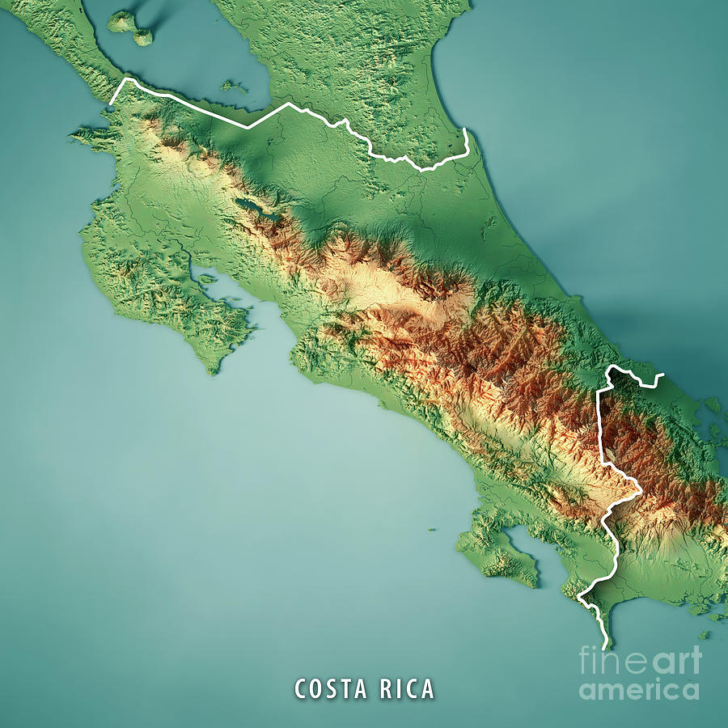
Motivation
Are the results obtained in one country applicable to all of them?
Different trade openness
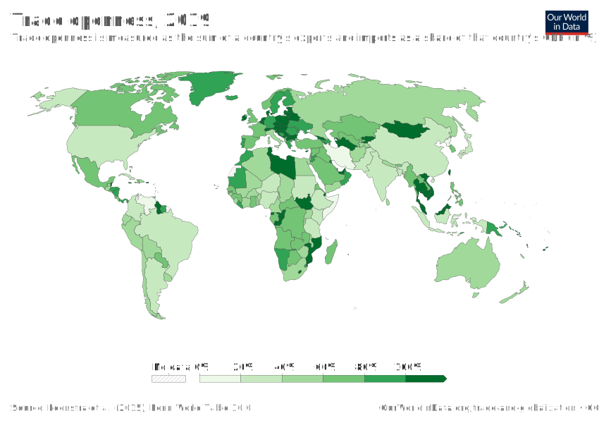Trade openness index (2019)
Motivation
Are the results obtained in one country applicable to all of them?
Other very important considerations
- Data collection.
- Informality.
- Auditing: Almunia et al. (forthcoming) and Pomeranz (2015).
- Institutions.
This paper
- Describe the coverage and cleaning of the data.
- Describe the firms and their relationships in formal sector of Costa Rica.
- Number of workers
- Total sales.
- Firm-to-firm transactions: sales and purchases.
- Number of customers and suppliers.
This paper
- Replicate and provide 15 (new) stylised facts found in developed countries’ production networks.
- Firm-to-firm relationships.
- The role of geography in these relationships.
- Exposure to international trade.
- Compare these stylised facts to those reported in other countries.
- Provide replication package to other researchers.
This paper
Today
- Describe the coverage and cleaning of the data.
- Replicate and provide 15 (new) stylised facts found in developed countries’ production networks.
- Firm-to-firm relationships.
- The role of geography in these relationships.
- Exposure to international trade.
Crash course on production networks
Weighted directed network/graph.
- Firms: Nodes
- Firm-to-firm relationships: Edges.

Simple production network
Data
Available in Costa Rica
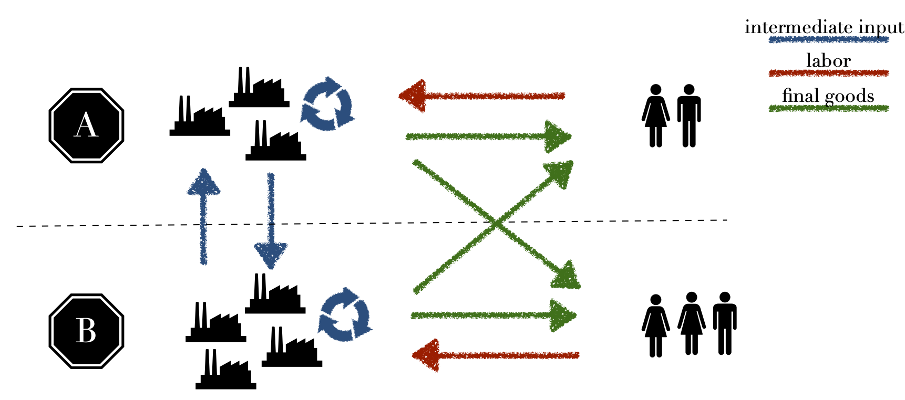Agents
Data
Sources
- Employer-Employee Administrative Data (2006-2019): wage, firm industry, plant location.
- VAT Administrative data (2008-2019): annual firm-to-firm transactions, customers, suppliers, firm industry, administrative location. At least 2.5 million Costa Rican colones. (~$4,200)
- Corporate Tax Administrative data (2008-2019): Balances sheets with revenue, profits, costs, fixed assets, others.
- Customs data (2008-2019): yearly firm-level imports and exports.
Data
Sample selection
- Firms with one permanent worker anually.
- Exclude the Diplomatics Activities sector.
After cleaning procedure we capture in a given year between
- 94.5 and 97.4% of total sales.
- 81.5 and 87.9% of network sales across firms.
- 78.5 and 84.8% of transactions across firms.
Agents in the economy
- 96,177 businesses and 3,839,030 connections between buyers and suppliers.
- About 38 thousand businesses and 300 thousand transactions in a given year.
Data
Sectoral composition is persistent in time
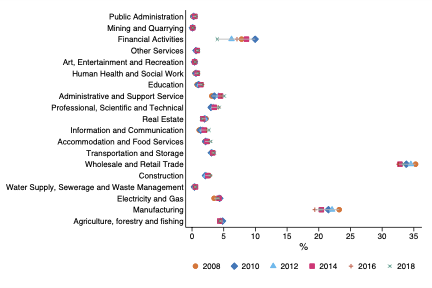Total sales
Data
Share of buyers and/or sellers is also persistent in time
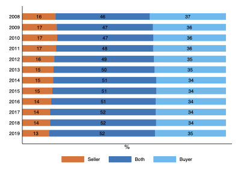Total sales
Data
Upstream (downstream) sectors are more likely to be only sell (buy) from other firms
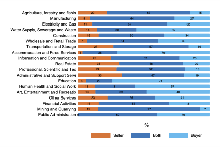Total sales
Stylised facts
Main message
The number of customers/suppliers is the key driver of a firm-to-firm sales.
Domestic firm-to-firm trade
- Domestic production networks are sparse.
- The distributions of firm sales, network sales and purchases, and buyer-supplier connections show substantial dispersion.
- Firm size is positively correlated to the number of connections to other firms.
- Firm size is positively correlated to the number of municipalities and number of industries with which a firm trades.
- The number of links accounts for more than half of the variation in the total value of firm-to-firm sales and purchases. As we aggregate sales and purchases from the firm-level to the industry-level, the value of the average transaction with buyers or suppliers becomes more important.
Stylised facts
Main message
The number of customers/suppliers is the key driver of a firm-to-firm sales.
Domestic firm-to-firm trade
- The distribution of sales (purchases) among customers (suppliers) does not vary substantially with the number of customers (suppliers).
- The production network displays negative degree assortativity between sellers and buyers.
- Top customers (suppliers) account for a high percentage of a firm’s sales (purchases).
- The persistence of firm-to-firm linkages increases with firm size.
Stylised facts
Main message
The number of customers/suppliers is the key driver of a firm-to-firm sales.
The geography of domestic firm-to-firm trade
- Most firm-to-firm linkages are formed between nearby firms.
- Trade flows between municipalities increase in the geographical proximity between the municipalities.
- The number of connections decays with distance and travel time faster than the average transaction.
Firm-to-firm trade within and across borders
- Importer (exporter) firms are larger than non-importer (non-exporter) firms.
- Most firms do not import or export directly, but most do so indirectly.
- Direct and total export and import shares increase with firm size.
Stylised facts
Today
- The distributions of firm sales, network sales and purchases, and buyer-supplier connections show substantial dispersion.
- Firm size is positively correlated to the number of connections to other firms.
- The production network displays negative degree assortativity between sellers and buyers.
- The persistence of firm-to-firm linkages increases with firm size.
- The number of connections decays with distance and travel time faster than the average transaction.
Stylised facts
Firms within a sector are heterogenous
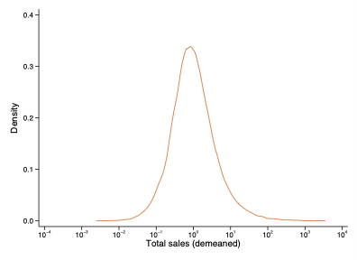
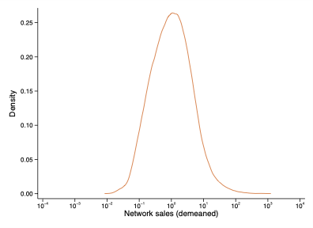
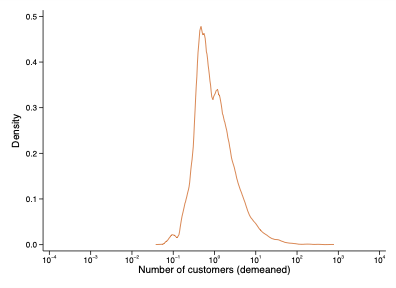
Stylised facts
The number of links explains more than half of the variation of network transactions
\[X_{i} = \text{number of links} \cdot \text{average transaction}\]
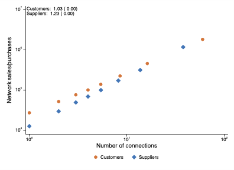
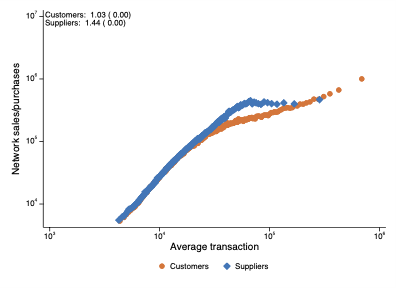
Stylised facts
A customer (supplier) firm connects with many suppliers (customers); but those suppliers would, on average, have fewer customers (suppliers)
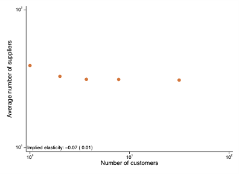
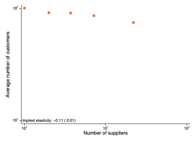
Stylised facts
The persistence of firm-to-firm linkages increases with firm size
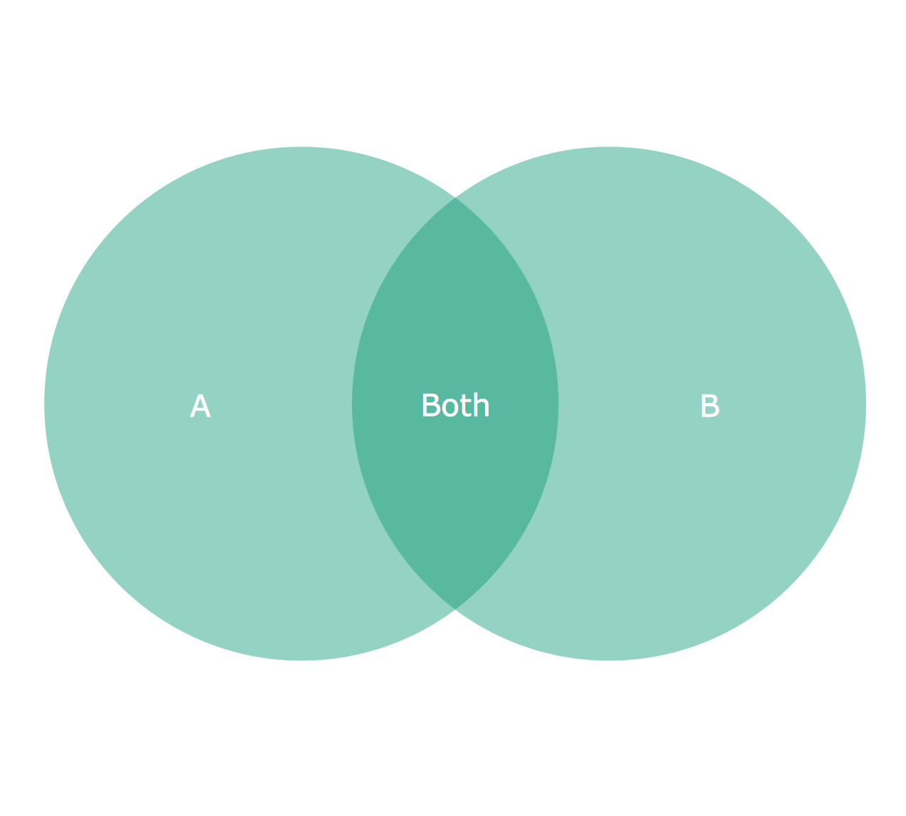Destruction (A), survival (Both) and creation (B) of links
Stylised facts
The persistence of firm-to-firm linkages increases with firm size
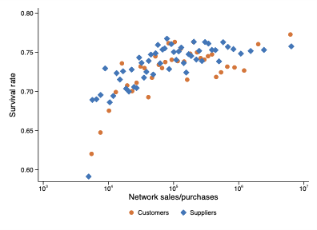
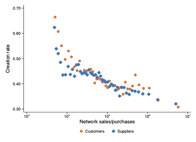
Stylised facts
The number of connections decays with distance and travel time faster than the average transaction

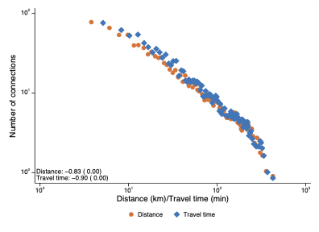
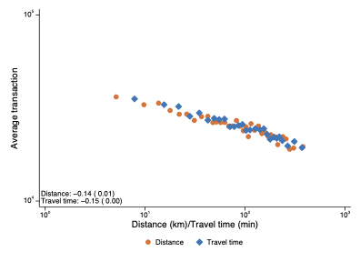
References
Acemoglu, D., Carvalho, V. M., Ozdaglar, A., & Tahbaz-Salehi, A. (2012). The Network Origins of Aggregate Fluctuations. Econometrica, 80(5), 1977–2016. https://doi.org/10.3982/ecta9623
Adão, R., Carrillo, P., Costinot, A., Donaldson, D., & Pomeranz, D. (2022). Imports, Exports, and Earnings Inequality: Measures of Exposure and Estimates of Incidence. The Quarterly Journal of Economics, 137(3), 1553–1614. https://doi.org/10.1093/qje/qjac012
Almunia, M., Hjort, J., Knebelmann, J., & Tian, L. (forthcoming). Strategic or Confused Firms? Evidence from “Missing” Transactions in Uganda. Review of Economics and Statistics. Forthcoming. https://doi.org/10.1162/rest_a_01180
Arkolakis, C., Huneeus, F., & Miyauchi, Y. (2021). Spatial Production Networks.
Bernard, A. B., Dhyne, E., Magerman, G., Manova, K., & Moxnes, A. (2022). The Origins of Firm Heterogeneity: A Production Network Approach. Journal of Political Economy, 130(7), 1765–1804. https://doi.org/10.1086/719759
Bernard, A. B., Moxnes, A., & Saito, Y. U. (2019). Production Networks, Geography, and Firm Performance. Journal of Political Economy, 127(21), 639–688. https://doi.org/10.1086/700764
Carrillo, P., Donaldson, D., Pomeranz, D., & Singhal, M. (2022). Ghosting the Tax Authority: Fake Firms and Tax Fraud (No. 30242). National Bureau of Economic Research. https://doi.org/10.3386/w30242
Carvalho, V. M., Nirei, M., Saito, Y. U., & Tahbaz-Salehi, A. (2021). Supply Chain Disruptions: Evidence from the Great East Japan earthquake. Quarterly Journal of Economics, 136(2), 1255–1321. https://doi.org/10.1093/qje/qjaa044
Cevallos Fujiy, B., Ghose, D., & Khanna, G. (2022). Production Networks and Firm-level Elasticities of Substitution. https://drive.google.com/file/d/1fnXWQ0bYwK-yvaYM-t120sYfUTOd7oKC/view
Demir, B., Javorcik, B., Michalski, T. K., & Ors, E. (2022). Financial Constraints and Propagation of Shocks in Production Networks. Review of Economics and Statistics, 1–46. https://doi.org/10.1162/rest_a_01162
Dhyne, E., Kikkawa, A. K., Komatsu, T., Mogstad, M., & Tintelnot, F. (2022). Foreign Demand Shocks to Production Networks: Firm Responses and Worker Impacts. http://felix-tintelnot.wdfiles.com/local--files/files/Tintelnot%20Production%20Network
Dhyne, E., Kikkawa, A. K., Mogstad, M., & Tintelnot, F. (2021). Trade and Domestic Production Networks. Review of Economic Studies, 88(2), 643–668. https://doi.org/10.1093/restud/rdaa062
Huneeus, F. (2020). Production Network Dynamics and the Propagation of Shocks.
Panigrahi, P. (2022). Endogenous Spatial Production Networks: Quantitative Implications for Trade and Productivity.
Pomeranz, D. (2015). No Taxation without Information: Deterrence and Self-Enforcement in the Value Added Tax. American Economic Review, 105(8), 2539–2569. https://doi.org/10.1257/aer.20130393